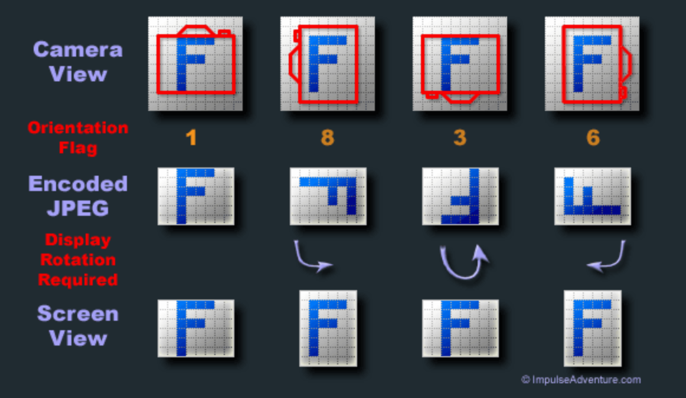
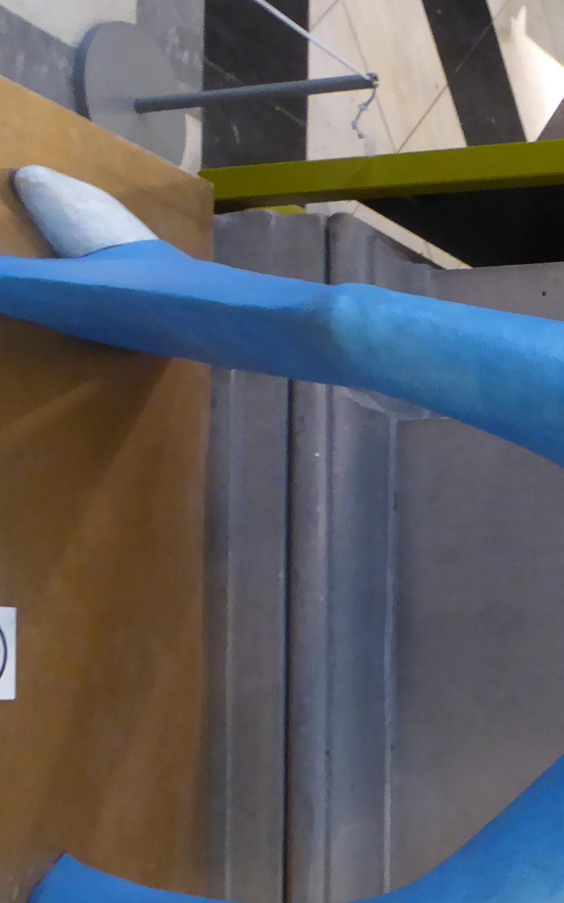
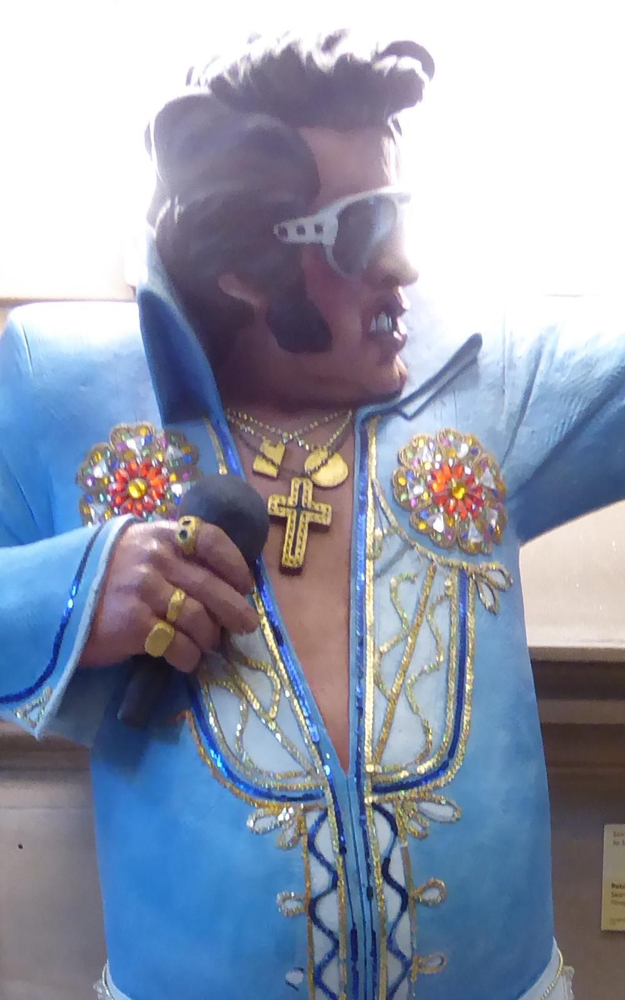

Robust Image Resizing
James Cooper - james@bitmechanic.com
Agenda
Goal: Provide an overview of common resize tools and issues you might run into in the wild
- Resize Tools
- Performance / memory usage
- Gotchas
- AWS Lambda / VIPS
Disclaimers
- This is a big topic
- I'm not an expert
- Corrections welcomed
Resize Tools
Open source tools that support a wide range of image formats and resize / crop / transform options.
- ImageMagick
- GraphicsMagick
- VIPS
ImageMagick
Perhaps the most well known resize tool. Provides 11+ commands including "identify" and "convert"
- https://en.wikipedia.org/wiki/ImageMagick
- 1987 by John Cristy while at DuPont
GraphicsMagick
- https://en.wikipedia.org/wiki/GraphicsMagick
- Fork of ImageMagick 5.5.2 in 2002
- Single "gm" binary with subcommands
- Many commands use the same option flags as ImageMagick
VIPS
- https://en.wikipedia.org/wiki/VIPS_(software)
- Originated from an EU funded project in the early 1990s (Birkbeck College and National Gallery London)
- Provides C library (libvips) as well as several CLI tools
- Designed to handle very large images
Performance
- Execution time
- Max RAM used
- Relationship to input image size
- (see demo)
Perf Conclusions
- VIPS has constant RAM usage
- IM and GM do not
Concurrency and Isolation
- Isolate resize code from other services
- Pathological case won't cause collateral damage
- Use docker resource limits or 'serverless' platforms
Other Gotchas
- EXIF Orientation
- Multi-frame images
- Color profiles (CMYK -> RGB)
- EXIF metadata stripping
EXIF Orientation
EXIF Orientation

vs:
EXIF Orientation
$ exiftool -D -n elvis.jpg | grep -i orient
274 Orientation : 8
143 Camera Orientation : 0
<img src="exif_crop/elvis.jpg" height="200"
style="image-orientation: from-image;">
Cropping Gotcha
# actual image geometry is width=4000, height=3000
$ gm identify elvis.jpg
elvis.jpg JPEG 4000x3000+0+0 DirectClass 8-bit 4.8Mi 0.000u 0m:0.000003s
# -crop <width>x<height>{+-}<x>{+-}<y>{%}
# The width and height give the size of the image that remains after cropping,
# and x and y are offsets that give the location of the top left corner of the
# cropped image with respect to the original image.
$ gm convert elvis.jpg -crop 1000x1600+700+250 cropped_wrong.jpg
# use -auto-orient to apply exif orientation before cropping
$ gm convert elvis.jpg -auto-orient -crop 1000x1600+700+250 cropped_right.jpg
# HARD WAY - preserve exif orientation
# reverse the target width/height (1000x1600 -> 1600x1000)
# x offset: 4000-1600-250 => 2150, y offset stays => 700
$ gm convert elvis.jpg -crop 1600x1000+2150+700 cropped_right_hard.jpg
Cropping Gotcha
|

Wrong |

Right |
Multi-frame images
# will create a separate jpeg per frame in GIF
# also takes over a minute to run
convert 'large_plankton.gif' -size 1000x1000 plankton.jpg
# wrong - crashes
convert 'large_tiff.tiff' -size 1000x1000 large_tiff.jpg
# right (assuming you want the first frame)
convert 'large_plankton.gif[0]' -size 1000x1000 plankton.jpg
convert 'large_tiff.tiff[0]' -size 1000x1000 large_tiff.jpg
Color Space Gotchas
- CMYK vs RGB
- See: https://en.wikipedia.org/wiki/Color_space
- Relevant if you're resizing for print
- (see example)
VIPS and Color Space
- No default ICC profile in the vips CLI tools
- The sharp nodejs lib provides one
- Good description: https://github.com/lovell/sharp/issues/99
Demo: VIPS on AWS Lambda
- Uses sharp node.js package, which wraps libvips
- Credits: https://github.com/dioptre/lampic
- Hacked to fetch single image, resize, store output to S3
Invoke Example
#!/usr/bin/env python3
import boto3, json
orig_urls = [
"http://bitmech-west2.s3.amazonaws.com/resize-images/1_Wild_Turkey.jpg",
"http://bitmech-west2.s3.amazonaws.com/resize-images/ContinentalDC-10-30.jpg",
"http://bitmech-west2.s3.amazonaws.com/resize-images/P1030659.JPG"
]
lam = boto3.client("lambda")
for url in orig_urls:
d = {"url": url, "height": 300}
resp = lam.invoke(FunctionName="image-resize", InvocationType="RequestResponse",
Payload=json.dumps(d))
out = json.loads(resp["Payload"].read())
print("%s to %s (%d ms)" % (url, out["resizeUrl"], out["elapsedMillis"]))
Performance / Cost
- Using a 512MB RAM config
- 12MP image -> about 500ms each (including download/upload time)
- 1 million requests -> $4.17
- Only pay for what you use, service is autoscaled
Summary / Suggestions
- Isolate resize tasks to separate VM / container / lambda
- Use VIPS when possible to bound RAM usage
- Make sure to handle EXIF orientation if you're cropping or rotating
Thank You!
James Cooper - james@bitmechanic.com